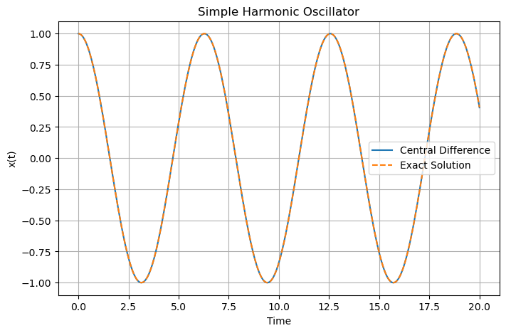

C1.3 — The Central Difference Method#
C1.3.1 — Motivation#
The Forward Euler method uses information only from the current point:
Although simple, this introduces an asymmetry in time because the derivative is approximated using information only from one side of the point.
A more balanced approach is to use information from both sides of a point.
This leads to the central difference approximation.
The central difference method is important because it:
improves derivative accuracy,
treats past and future more symmetrically,
appears naturally in many physics problems,
forms the basis of many finite-difference methods,
is widely used in wave equations and mechanics simulations.
The central difference approximation is especially valuable in physics because many physical laws are naturally time-symmetric.
C1.3.2 — Deriving the Central Difference Approximation#
Consider a function \(y(t)\).
We approximate the derivative at time \(t_n\) using the neighboring points:
The slope between these points is
This gives the central difference approximation:
This approximation uses information from both sides of the point.
Compared to Forward Euler,
the central difference method is more symmetric.
C1.3.3 — Accuracy of the Central Difference Method#
The Forward Euler derivative approximation has truncation error proportional to
The central difference approximation has truncation error proportional to
This means the central difference method is generally much more accurate for the same step size.
Forward difference:
Central difference:
The central difference approximation is second-order accurate.
Reducing the step size improves both methods, but the central difference method converges faster.
Box Activity — Proving the Accuracy Using Taylor Expansions
Use Taylor expansions about the point \(t_n\) to show that the central difference approximation
has truncation error of order
Hint:
Expand both
about \(t_n\).
Activity solution
Expand \(y(t_n+h)\) about \(t_n\):
Now expand \(y(t_n-h)\):
Subtract the two expressions:
Simplify:
Now divide by \(2h\):
Therefore,
The leading truncation error is proportional to \(h^2\), so the central difference approximation is second-order accurate.
C1.3.4 — Central Difference Form of a Differential Equation#
Suppose we have
Using the central difference approximation,
Solving for \(y_{n+1}\) gives
Unlike Forward Euler, this method requires two previous points.
Because the method uses both past and future neighboring points, it behaves differently from one-step methods like Euler.
C1.3.5 — Why Two Initial Values Are Needed#
Forward Euler requires only one starting value:
The central difference method requires
Therefore, we must somehow obtain two starting values before the method can proceed.
Typically this is done by:
using Forward Euler for the first step,
using an exact initial derivative,
using another numerical method to generate the second point.
The central difference method is not self-starting because the update equation depends on two previous values.
C1.3.6 — Example: Exponential Growth#
Consider
with initial condition
Using the central difference method,
Suppose
To begin, we need two starting values.
We already know
Use Forward Euler for the first step:
Thus,
Now apply the central difference update:
Therefore,
Example — Starting the Central Difference Method
The central difference method requires two initial values.
A common strategy is:
use the given initial condition for \(y_0\),
generate \(y_1\) using Forward Euler,
continue using the central difference update equation.
C1.3.7 — Time Symmetry#
One reason the central difference method is important in physics is its symmetry in time.
The derivative approximation uses points equally spaced around the current point:
This means the method treats forward and backward directions more equally than Forward Euler.
This symmetry is especially important in:
classical mechanics,
wave equations,
oscillatory systems,
molecular dynamics,
conservative systems.
Many physical systems do not inherently prefer a forward direction in time. Central difference methods better reflect this symmetry than Forward Euler methods.
C1.3.8 — Central Difference for Second Derivatives#
The central difference method is especially useful for second derivatives.
Using Taylor expansions, we obtain
This formula is fundamental in numerical physics.
This approximation appears in:
Newton’s second law,
oscillations,
wave equations,
diffusion equations,
finite difference simulations.
C1.3.9 — Box Activity: Harmonic Oscillator#
Box Activity — Central Difference for Oscillations
A simple harmonic oscillator satisfies
Using the central difference approximation for the second derivative,
derive an update equation for \(x_{n+1}\).
Activity solution
Substitute the central difference approximation into the differential equation:
Multiply by \(h^2\):
Solve for \(x_{n+1}\):
Therefore,
This update equation is widely used in computational mechanics and wave simulations.

C1.3.10 — Summary#
The central difference approximation is
Key ideas:
it uses information from both sides of a point,
it is more symmetric than Forward Euler,
it is second-order accurate,
it requires two starting values,
it is especially useful for oscillatory and wave systems,
it forms the foundation of many finite-difference methods.
The second-derivative approximation
is one of the most important formulas in computational physics.
The central difference method introduces one of the most important ideas in computational physics:
This idea underlies finite difference methods for mechanics, electromagnetism, fluid dynamics, and quantum mechanics.